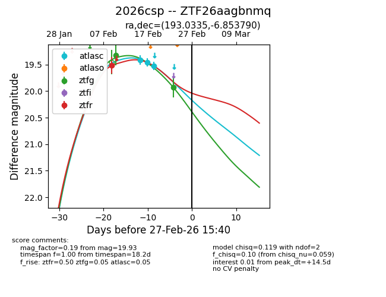
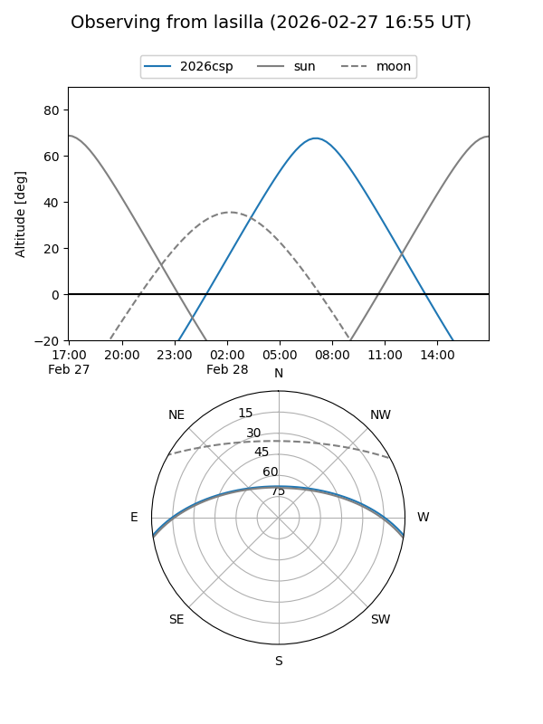
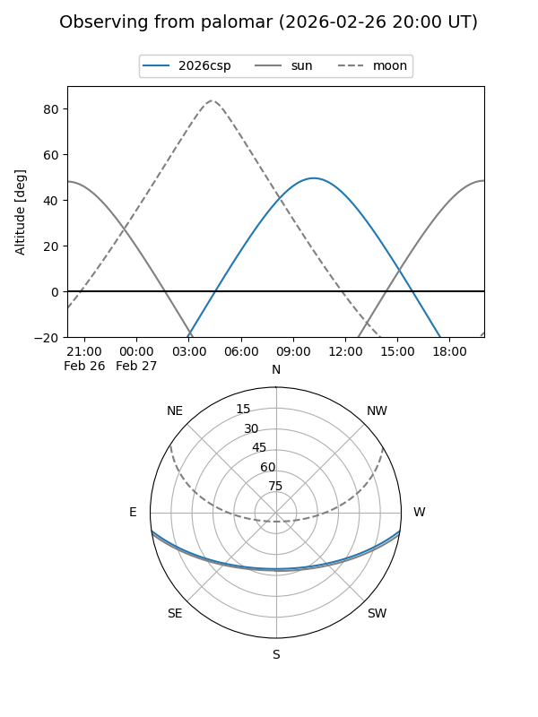
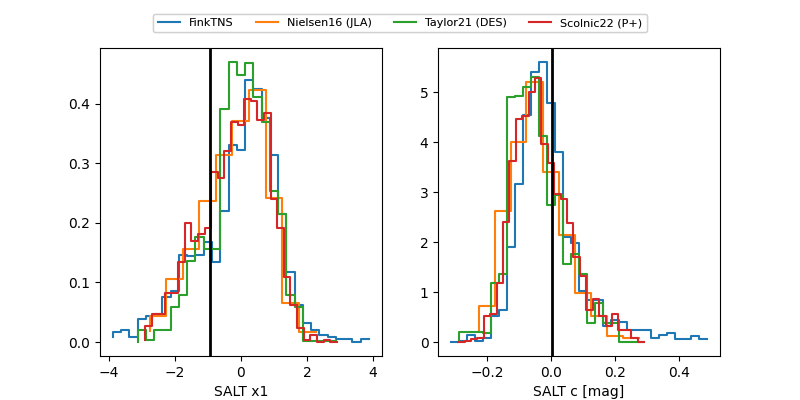

2026csp
Target 2026csp at 2026-02-27 15:43
Aliases and brokers:
FINK: link
Lasair: link
ALeRCE: link
TNS: link
YSE: link
alt names
ZTF26aagbnmq (ztf,fink_ztf)
2026csp (tns,yse)
Coordinates:
equatorial (ra, dec) = 193.0335,-6.85379
equatorial (HMS+DMS) = 12:52:08.04,-06:51:13.64
galactic (l, b) = (303.2411,+56.01754)
Flags:
Photometry:
last atlasc=19.52, ztfg=19.93, ztfr=19.51
3 atlasc, 2 ztfg, 1 ztfr detections
Lightcurve

Visibility


Additional plots
